プロンプトエンジニアリングは死んだ。開発現場を塗り替えるループエンジニアリング
コードを書く人から、AIが安全に自走するループを設計する人へ。成功条件、検証負荷、外部メモリ、運用ガードレールを14枚で整理します。
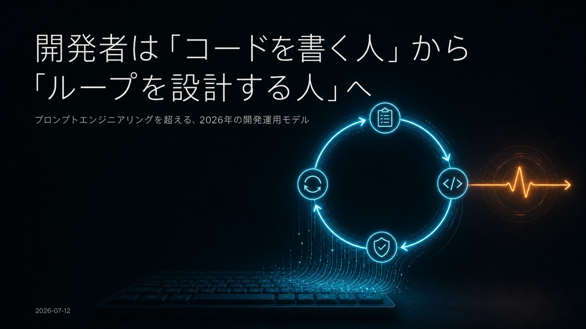
キーボードから伸びる循環図に、指示、コード、検証、再試行を表すアイコンを配置し、開発者の役割をコードを書く人からループを設計する人へ転換する2026年の開発運用モデルを示す表紙。
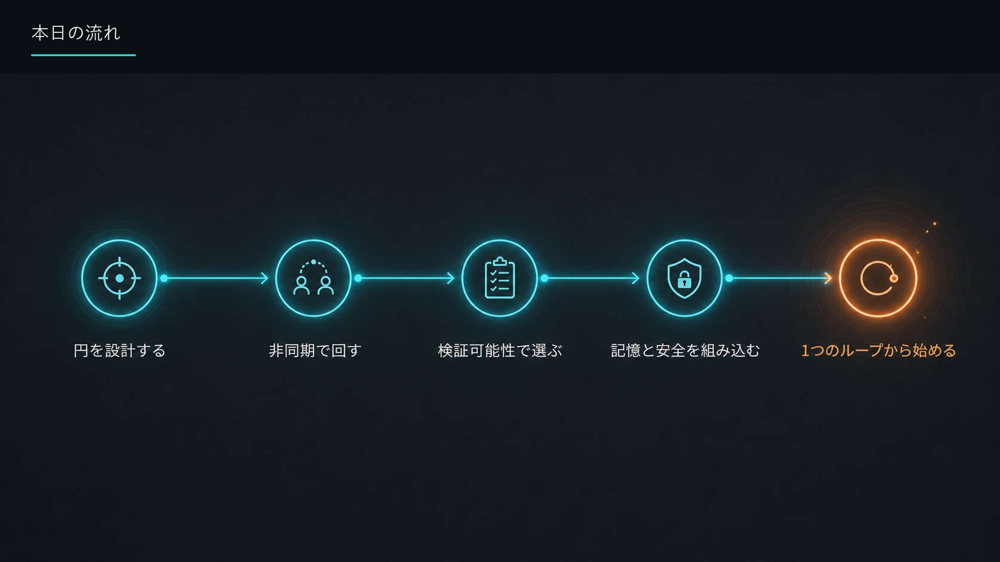
標的、チーム、チェックリスト、鍵、循環の5アイコンを矢印でつなぎ、円を設計する、非同期で回す、検証可能性で選ぶ、記憶と安全を組み込む、1つのループから始める、という全体の流れを示す。
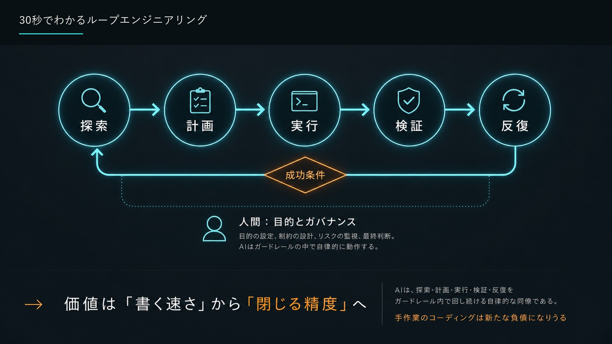
探索、計画、実行、検証、反復を成功条件で閉じる循環図。人間は目的設定、制約設計、リスク監視、最終判断を担い、AIはガードレール内で自律反復するため、価値は書く速さから閉じる精度へ移ると結論づける。
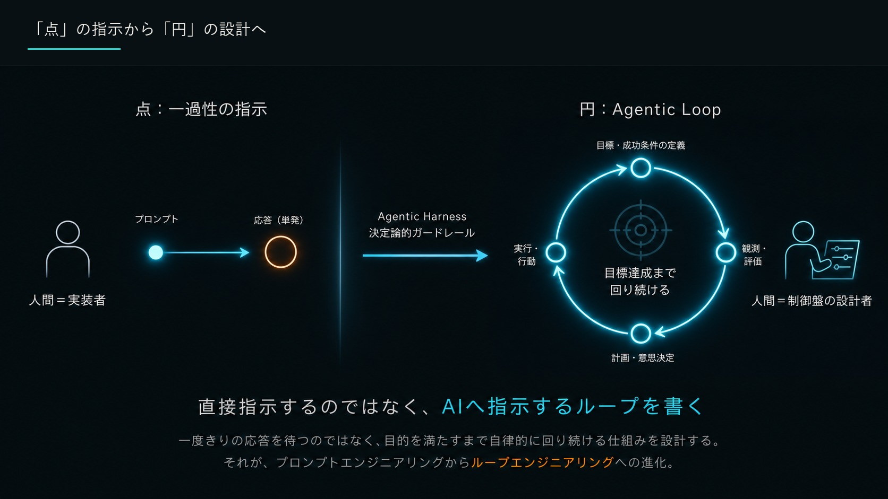
左の一過性プロンプトと単発応答では人間が実装者だが、右のAgentic Loopでは目標と成功条件、観測と評価、計画と意思決定、実行と行動を循環させ、人間が制御盤の設計者になる対比図。
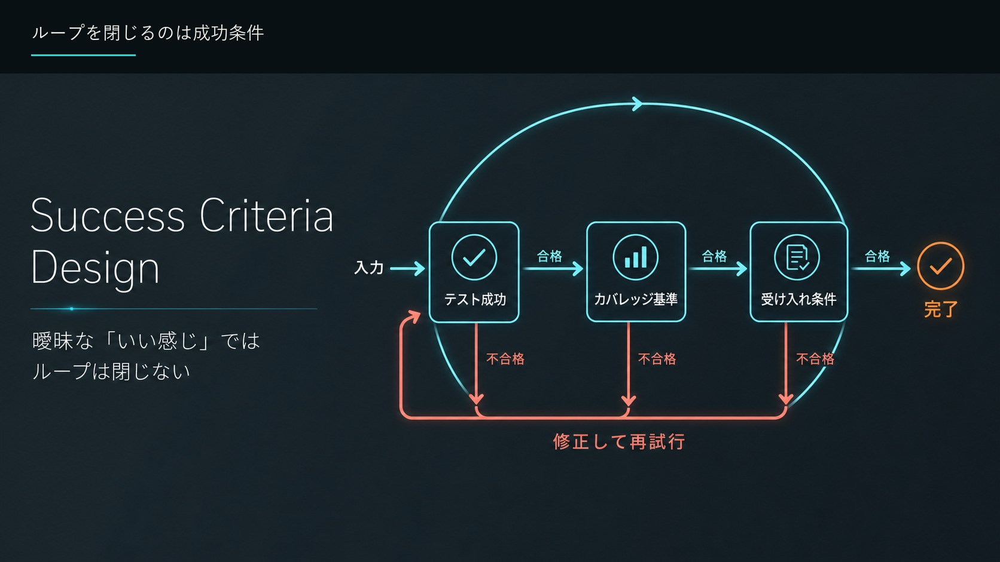
入力をテスト成功、カバレッジ基準、受け入れ条件の順に機械判定し、すべて合格すれば完了、不合格なら修正して再試行するSuccess Criteria Design。曖昧な「いい感じ」ではループは閉じない。
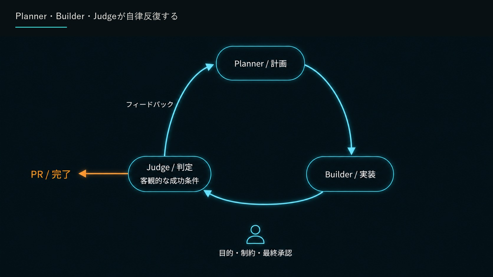
Plannerが計画し、Builderが実装し、Judgeが客観的な成功条件で判定してフィードバックを戻す三角形の自律反復。条件を満たすとPRまたは完了へ進み、人間は目的、制約、最終承認を担う。
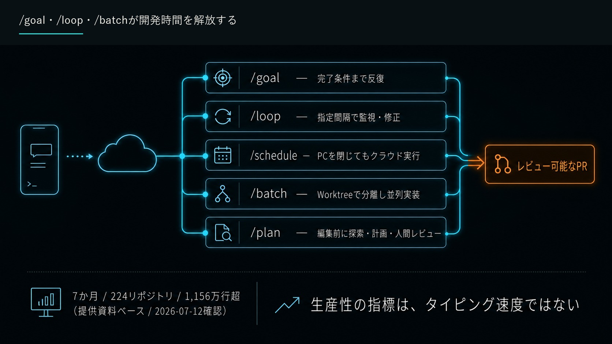
端末からクラウドへ渡した作業を、完了条件まで反復する/goal、指定間隔で監視・修正する/loop、PCを閉じても実行する/schedule、Worktreeで分離し並列実装する/batch、編集前に探索・計画・人間レビューする/planへ分岐し、レビュー可能なPRへ集約する。提供資料ベースで7か月、224リポジトリ、1,156万行超、2026年7月12日確認。
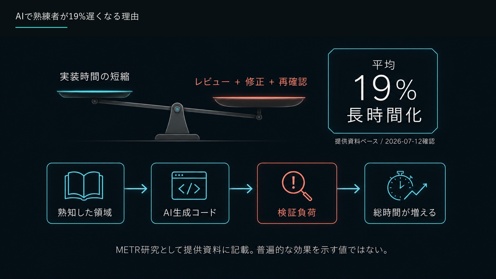
実装時間の短縮より、AI生成コードのレビュー、修正、再確認による検証負荷が重くなり、熟知した領域では総時間が平均19%長くなる流れを天秤と工程図で示す。METR研究として提供資料に記載された値で、一般的な効果を示すものではなく、2026年7月12日確認。
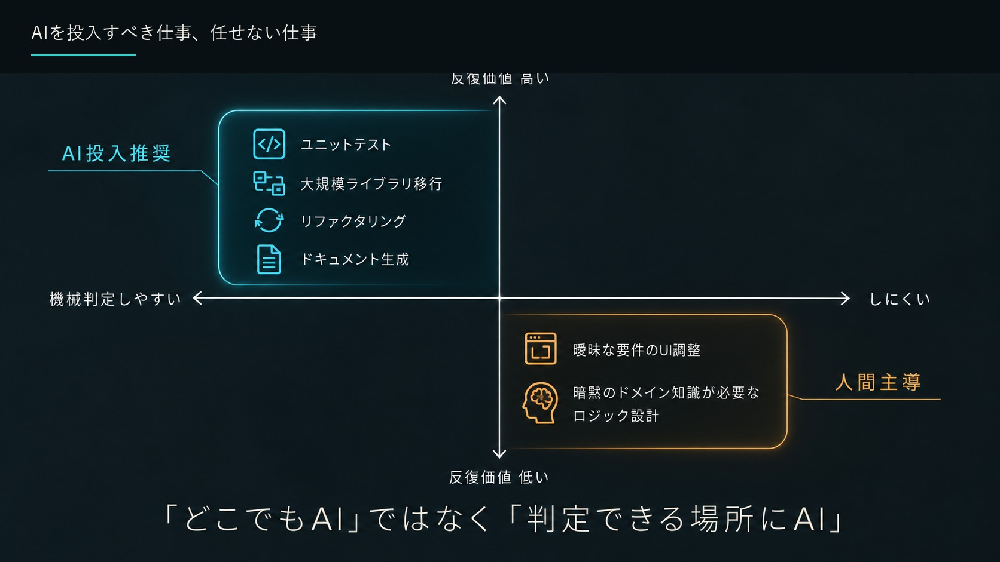
横軸を機械判定のしやすさ、縦軸を反復価値として、ユニットテスト、大規模ライブラリ移行、リファクタリング、ドキュメント生成はAI投入推奨に配置。一方、曖昧な要件のUI調整や暗黙のドメイン知識が必要なロジック設計は人間主導とし、判定できる場所にAIを使う。
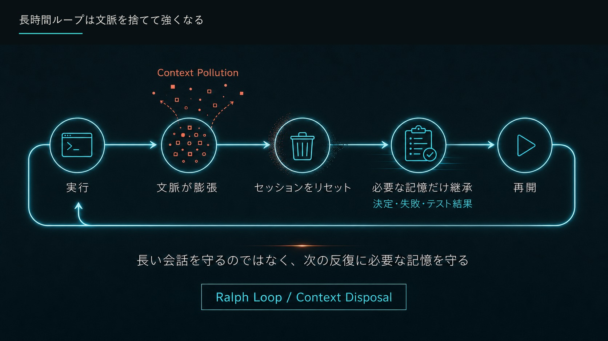
実行で文脈が膨張しContext Pollutionが起きたらセッションをリセットし、決定、失敗、テスト結果という必要な記憶だけを継承して再開する循環。Ralph LoopまたはContext Disposalとして、長い会話ではなく次の反復に必要な記憶を守る設計を示す。
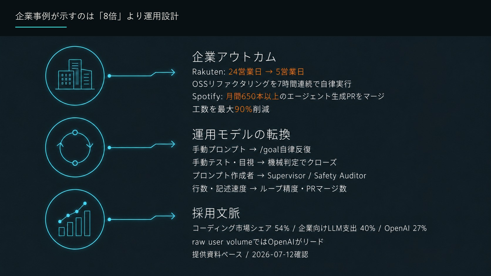
企業アウトカムは、楽天が24営業日から5営業日へ短縮しOSSリファクタリングを7時間連続で自律実行、Spotifyが月間650本以上のエージェント生成PRをマージし工数を最大90%削減。運用は手動プロンプトから/goal自律反復、目視から機械判定、作成者から監督・安全監査へ転換する。採用文脈としてコーディング市場シェア54%、企業向けLLM支出40%、OpenAI 27%を提供資料ベース、2026年7月12日確認として掲載。
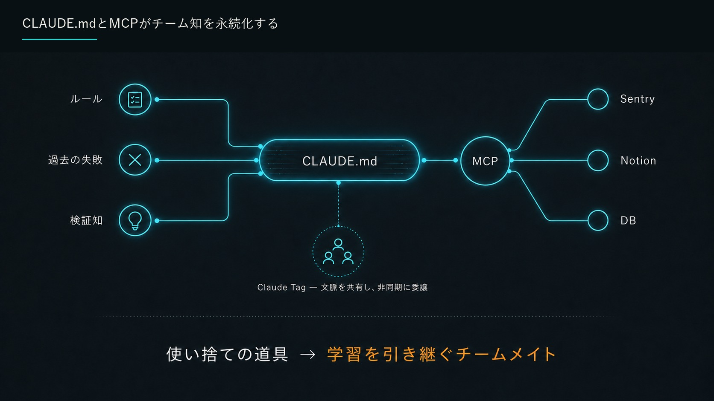
ルール、過去の失敗、検証知をCLAUDE.mdへ集約し、MCP経由でSentry、Notion、DBへ接続する知識基盤。Claude Tagで文脈を共有して非同期委譲し、使い捨ての道具を学習を引き継ぐチームメイトへ変える。
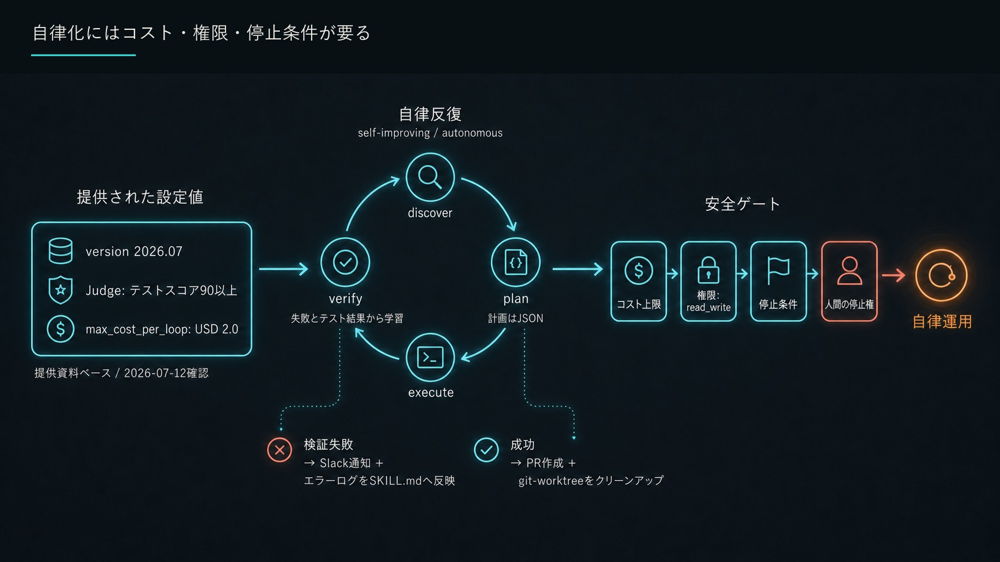
version 2026.07、Judgeのテストスコア90以上、1ループの最大コストUSD 2.0という設定例から、discover、plan、execute、verifyを自律反復する。安全ゲートはコスト上限、read_write権限、停止条件、人間の停止権で構成し、失敗時はSlack通知とエラーログをSKILL.mdへ反映、成功時はPR作成とgit worktreeのクリーンアップを行う。提供資料ベース、2026年7月12日確認。
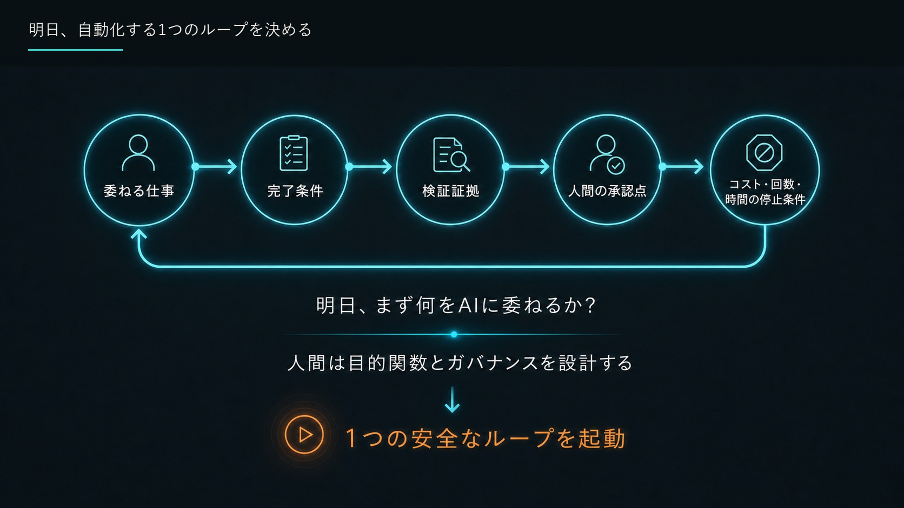
委ねる仕事、完了条件、検証証拠、人間の承認点、コスト・回数・時間の停止条件を順に定義して循環させる実行チェックリスト。人間が目的関数とガバナンスを設計し、明日まず1つの安全なループを起動するよう促す。